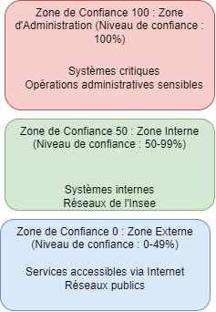
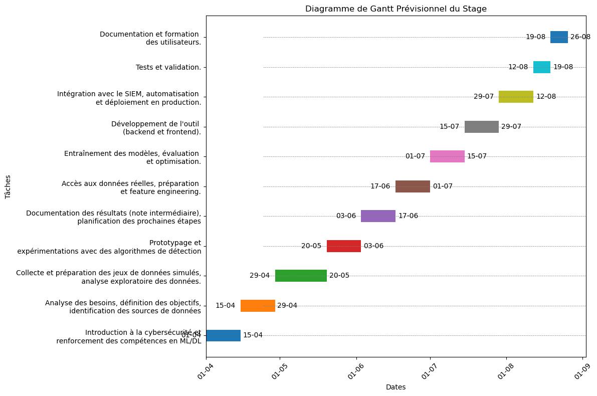

Rapport de stage 3A: Machine Learning appliqué à la cybersécurité
cybersécurité, machine learning, stage, rapport
Table des matières
- Introduction
- 01 - Découverte et Contexte
- 02 - Recherche et Collecte de Données
- 03 - Choix des Problèmes et des Outils de Machine Learning
- 04 - Exploration de Modèles et Outils Avancés
- 05 - Anomaly Detection et Modèles de Classification
- 06 - Exploration d’Articles Scientifiques
- 07 - Modélisation et Évaluation des Modèles
- 08 - Travail avec Splunk et Pipelines
- 09 - Expérimentations et Déploiement
- 10 - Reproductibilité et MLOps
- Conclusion
- Annexe
Présentation du stagiaire et du maître de stage
- Stagiaire : Mathieu THOMASSIN
- Maître de stage : Michael ORSUCCI, responsable du Security Operation Center de l’Insee
- Titre du stage : Machine Learning appliqué à la cybersécurité
Introduction
L’Insee a renforcé récemment ses capacités opérationnelles en termes de cybersécurité via notamment la création de son SOC (Security Operation Center) en septembre 2023. Devant la quantité de données et leur diversité et face aux évolutions des techniques et tactiques des attaquants, les méthodes de détection de cyberattaques peuvent avoir des limites. L’application d’algorithmes de Machine Learning peut aider les analystes SOC à repérer des attaques. Se déroulant au sein de l’équipe SOC construite depuis peu, le stage va permettre d’appliquer des techniques de Machine Learning et de deep learning sur des jeux de données réelles, afin de participer à la détection d’incidents de sécurité.
Présentation de l’organisation
L’Insee a renforcé récemment ses capacités opérationnelles en termes de cybersécurité via notamment la création de son SOC (Security Operation Center) en septembre 2023. Cette équipe est répartie entre les sites de la DR de Nantes et la DR de Metz et a pour objectif de renforcer la sécurité du système d’information (SI).
Contexte général du stage
Devant la quantité de données et leur diversité et face aux évolutions des techniques et tactiques des attaquants, les méthodes de détection de cyberattaques peuvent avoir des limites. L’application d’algorithmes de Machine Learning peut aider les analystes SOC à repérer des attaques. Le stage avait donc pour but de permettre d’appliquer des techniques de Machine Learning et de deep learning sur des jeux de données réelles, afin de participer à la détection d’incidents de sécurité.
Objectifs du stage
Objectifs principaux
Il s’agissait d’appliquer des techniques de détection de requêtes malveillantes arrivant dans le SI de l’Insee. Les requêtes arrivant au sein du SI peuvent être centralisées par un SIEM (Security Information and Event Management).
Résultats attendus
- Offrir un service s’ajoutant au SIEM permettant d’identifier des requêtes malveillantes.
- Pouvoir comparer différents meilleurs modèles (au sens d’une recherche dans les hyperparamètres) entre eux.
- Favoriser les bonnes pratiques du MLOps : reproductibilité, contrôle de version, automatisation, surveillance, collaboration.
- Étendre la méthodologie à des jeux de données publics différents.
- Explorer les algorithmes de détection d’anomalie.
Importance de la mission pour l’Insee
À titre d’exemple, l’Insee détient l’application Elire. Une attaque réussie sur cette application perturberait le bon déroulement de la vie démocratique. Finaliser la formation d’attaché statisticien en s’appliquant à résoudre un problème concret avant une prise de poste dans un domaine proche.
Contexte général du stage
Ce stage s’inscrit pleinement dans le parcours que j’ai progressivement construit tout au long de ma carrière à l’Insee. Débutant il y a plusieurs années sur un poste de contrôleur-programmeur, j’ai pu apprécier les cours d’informatique et de statistiques pendant mon parcours à l’Ensai. J’y ai suivi les options menant progressivement à se spécialiser jusqu’au master en Informatique et traitement des données.
Au cours de ma préparation et de l’obtention de la qualification d’analyste, ma curiosité pour la sécurité des systèmes d’information s’est particulièrement développée. L’analyse des requêtes au sein d’un réseau soulève de nombreuses questions : volume des données, méthode de traitement statistique avec le machine learning, rapidité et efficacité de ce traitement. C’est un domaine où les techniques de machine learning présentent un intérêt certain.
Les enjeux de la cybersécurité peuvent se révéler particulièrement lourds, comme on peut le découvrir dans les journaux pour de nombreuses organisations. Ce stage au SOC représente une opportunité unique de confronter ces intérêts théoriques à des problématiques concrètes de cybersécurité, renforçant ainsi mes compétences et ma compréhension dans un domaine en pleine expansion.
Importance de la cybersécurité et du machine learning dans ce domaine
La cybersécurité et le machine learning sont cruciaux pour les entreprises aujourd’hui pour plusieurs raisons. D’une part, la cybersécurité est essentielle pour protéger les données sensibles contre les cyberattaques qui sont de plus en plus sophistiquées et fréquentes. Les conséquences d’une faille de sécurité peuvent être dévastatrices pour l’Insee, incluant des pertes de données, des dommages à la réputation et la crédibilité de l’Institut, et des impacts sur les utilisateurs.
D’autre part, le machine learning offre des outils puissants pour détecter et prévenir les menaces en temps réel. Grâce à ses capacités de traitement et d’analyse de vastes quantités de données, le machine learning peut identifier des modèles et des anomalies que les méthodes traditionnelles pourraient manquer. Par exemple, la DSI a déployé sur le poste de chaque agent HarfangLab, un outil de sécurité informatique reposant sur des modèles de machine learning pour détecter la présence de logiciels malveillants, des malware, et permettant d’isoler le poste compromis.
Le machine learning permettrait également de réduire le travail des analystes du SOC en classifiant automatiquement les requêtes comme bégnines ou malveillante.
Objectifs du stage
En débutant ce stage, j’avais pour but de pouvoir réaliser des objectifs à la fois académiques, en lien avec mes intérêts développés lors de la scolarité, ainsi que des objectifs professionnels, me permettant de m’insérer au mieux dans la structure de l’Insee pour débuter ma carrière d’attaché.
Alignement avec mes objectifs de carrière : Ce stage présentait une opportunité unique de développer des compétences à la fois en statistique et en informatique. De plus, au lieu de se dérouler dans un service de développement, il a eu lieu dans un service de production, ce qui m’a permis de découvrir une autre perspective de l’informatique par rapport à l’informatique de type “data science” pratiquée à l’Ensai. En renforçant mes compétences en machine learning et en informatique, j’ai donc pu acquérir de l’expérience pour de futurs rôles au sein de l’Insee.
Développement de compétences spécifiques : Pour réaliser la tâche principale de ce stage, j’avais besoin de maîtriser des techniques de machine learning et de deep learning appliquées à la cybersécurité, ainsi que de les inscrire dans une approche de type DevOps ou MLOps. Il m’a donc fallu utiliser des outils comme Scikit-learn, MLflow, des techniques de deep learning, et utiliser le cluster Kubernetes pour entraîner et déployer un modèle avec une API.
Application pratique des connaissances théoriques : Si j’ai appris à faire du machine learning à l’école et y ai découvert des notions de DevOps, ce n’est qu’en arrivant en stage que j’ai pu découvrir l’étendue des problèmes pratiques que cela peut poser. Isolés, dans des environnements de travail bien conçus, voire seulement à travers une présentation théorique, les cours m’ont permis d’acquérir des connaissances. Cependant, c’est seulement en travaillant sur des projets réels que j’ai pu répondre de façon pratique en piochant dans la boîte à outils de mes cours.
Contribution à l’organisation d’accueil : Débutant dans le domaine de la cybersécurité, je n’avais pas pour objectif d’apporter une solution exploitable en production. En revanche, il était essentiel pour moi de démontrer ma capacité future à prendre une position d’ingénieur capable d’envisager un problème nouveau et d’y apporter une solution pratique exploitable par une équipe. La création d’un socle d’entraînement pour un modèle de détection de requêtes malveillantes, destiné à être utilisé par des utilisateurs, sert cet objectif.
Exploration des défis et opportunités : Face à un nouveau problème pour moi, j’ai voulu prendre le temps d’explorer certaines spécificités liées à la cybersécurité et les pratiques MLOps. J’ai donc recherché, à travers le web, dans des livres et des articles, les méthodes classiques en machine learning pour améliorer la sécurité des systèmes d’information ainsi que les façons possibles de les mettre en œuvre de manière robuste et reproductible.
Ces objectifs m’ont permis de m’assurer que ce stage serait bénéfique pour mon parcours comme pour l’Insee. Cependant, s’ils apparaissent rétrospectivement relativement clairs, ils ont pourtant été construits au fur et à mesure de mon avancée comme nous allons maintenant l’explorer.
1. Découverte et Contexte
Premiers pas dans le stage : Enthousiasme et incertitude
Sentiments initiaux : Avant de commencer le stage, j’avais pu discuter avec le RSSI (Responsable Sécurité du Système d’Information) et le DSI (Directeur du Système d’Information) de l’Insee au cours d’une formation interne avant l’oral de la qualification d’analyste. J’étais plutôt impressionné par les enjeux, le SI de l’Insee étant régulièrement la cible d’attaques dont j’entendais parler. Cependant, si je savais que je n’étais pas formé comme un “véritable” informaticien (n.d.), n’ayant reçu qu’une “sensibilisation à l’informatique de production ou à la sécurité” (n.d.) p55, j’avais plutôt confiance dans mes récentes capacités à traiter des données et dans mon envie de découvrir le domaine.
Raisons de ces sentiments : Lors de la scolarité, j’avais pris l’habitude d’explorer les rayonnages de la bibliothèque de l’Ensai, et j’y avais repéré un livre (n.d.) sur le machine learning et la sécurité. Me remémorant ce dont m’avait parlé mon ancien maître de stage sur le plan de reprise d’activité de l’application critique Elire, et en sachant qu’un système informatique génère une quantité de données sur lesquelles il est possible de travailler pour mieux en comprendre les rouages, la perspective de travailler sur la sécurité du SI de l’Insee m’intéressait beaucoup. Cependant, je n’avais pas encore d’idée sur l’application concrète d’un tel projet, ce qui me plongeait dans une certaine incertitude.
Objectifs personnels initiaux : C’est pourquoi, j’avais tout d’abord comme objectif de mieux comprendre ce qu’il était possible de faire en sécurité informatique au sein de l’Insee. N’y avait-il pas déjà des outils externes très performants ? Qu’était-il possible d’apporter en tant qu’attaché statisticien débutant ?
Introduction à la cybersécurité : Définition et importance
Définition de la cybersécurité : La cybersécurité consiste à protéger les systèmes, les réseaux et les programmes contre les attaques numériques. (n.d.) Elle vise à garantir la confidentialité, l’intégrité et la disponibilité des informations. Assurer la sécurité du système d’information (SSI) consiste à gérer les risques de sécurité selon une démarche en trois étapes: lister, évaluer et traiter les risques. (n.d.) La notion de SOC, Security Operation Center, devient alors essentiel pour mettre en oeuvre une politique de cybersécurité. UN SOC, doit “monitorer l’ensemble des composants d’un système d’information et être capable de détecter et de sélectionner parmi des milliards d’octets des éléments caractéritiques d’une cyberattaque” (2024).
Importance de la cybersécurité : Une attaque informatique a aujourd’hui d’autant plus de valeur que l’activité des organisations est pratiquement toujours menée à l’aide d’outils informatiques. Sans défendre correctement cet outil, la continuité de l’activité est menacée d’interruption plus ou moins forte. La cybersécurité cherche également à protéger les données sensibles et personnelles, notamment au travers de l’obligation légale issue du Règlement Général sur la Protection des Données (RGPD). La confiance que le grand public accorde à l’Insee serait amoindrie en cas d’attaque réussie. C’est pourquoi la cybersécurité doit faire l’objet d’un soin permanent par l’Insee.
Liens avec le machine learning : La cybersécurité est très naturellement un domaine d’application du machine learning. En effet, on peut y obtenir des jeux de données robustes qui permettront “d’annuler certains des progrès les plus complexes dans la compétence des attaquants”. Le machine learning peut ainsi améliorer ou remplacer les “solutions basées sur des règles dans des problèmes comme la détection d’intrusion, la classification des logiciels malveillants ou l’analyse réseau” ((n.d., 5–6) ).
Présentation de l’équipe SOC et du système d’information (SI)
Structure de l’équipe SOC
L’équipe SOC de l’Insee a été créée en 2023 et est constituée de 6 membres répartis sur deux sites : Nantes et Metz. Son objectif principal est d’établir et de mettre en œuvre la politique de sécurité du système d’information (SI) de l’Insee. L’équipe est dirigée par un responsable unique qui pilote les travaux de manière transversale entre les deux sites. Les membres de l’équipe incluent des analystes de sécurité, des ingénieurs en cybersécurité, et des experts en gestion des incidents.
Fonctionnement du SOC
L’équipe SOC a pour mission de surveiller en permanence le SI de l’Insee afin de détecter, qualifier et remédier aux incidents de sécurité. Les principales activités du SOC incluent (n.d.):
Veille et qualification des vulnérabilités : Identifier quotidiennement les vulnérabilités affectant le SI de l’Insee et évaluer leur impact potentiel.
Conception de solutions de sécurité : Développer et mettre en place des solutions technologiques pour renforcer la sécurité du SI, notamment par la mise en place de solutions techniques innovantes pour garantir la sécurité du SI.
Détection et gestion des incidents : Utiliser des outils avancés comme le SIEM (Security Information and Event Management) ou des EDR (Endpoint Detection and Response) pour détecter les activités suspectes et les incidents de sécurité, puis élaborer et mettre en œuvre des plans de remédiation en collaboration avec les équipes concernées.
Maintien en condition de sécurité : Assurer la sécurité continue des différents systèmes d’information en surveillant les infrastructures et en veillant à l’application des correctifs nécessaires.
Support et expertise : Apporter une expertise en sécurité aux différentes unités de l’Insee, conseiller sur les meilleures pratiques et aider à la décision en matière de sécurité informatique.
L’équipe SOC joue un rôle crucial dans la préservation de l’intégrité, de la confidentialité et de la disponibilité des données et des systèmes de l’Insee. Leur travail permet de protéger les actifs numériques de l’organisation contre une variété de menaces cybernétiques.
- Présentation du SI : Le système d’information de l’Insee est documenté sur un wiki interne (2024). On peut notamment y trouver des schémas sur l’architecture du SI de production, mais pas sur celle du SI d’administration. L’architecture du SIA est très fortement guidée par les recommandations de l’anssi. (n.d.) Pour l’essentiel, on peut retenir une organisation en 3 couches.

Compréhension du SIEM et des logs
- Rôle du SIEM : Expliquez ce qu’est un SIEM (Security Information and Event Management) et son rôle dans la cybersécurité.
- Utilisation des logs : Décrivez l’importance des logs dans la détection des incidents de sécurité.
- Intégration des logs dans le SIEM : Mentionnez comment les logs sont intégrés et utilisés par le SIEM pour la surveillance et la détection des menaces.
2. Recherche et Collecte de Données
Attente de Splunk et recherche de datasets pertinents
Types de données : Réseau, logs, HTTP
Sélection et préparation des datasets
Présentation des premières données obtenues
3. Choix des Problèmes et des Outils de Machine Learning
Définition des problèmes de machine learning en cybersécurité
Introduction à Scikit-learn et choix des modèles
Formation à l’interprétabilité des modèles
4. Exploration de Modèles et Outils Avancés
Essais avec XGBoost pour la classification des malwares
Découverte de MLflow et utilisation de l’API
Introduction au deep learning avec le livre “Deep Learning from Scratch” (DLFS)
Exploration des design patterns en deep learning
5. Anomaly Detection et Modèles de Classification
Détour par la détection d’anomalies : Difficultés et recentrage
Analyses simples avec KNN et clustering
Analyse des données HTTP et détection des attaques (ex. DDOS)
Focalisation sur l’analyse des URL et compréhension des attaques
6. Exploration d’Articles Scientifiques
Lecture et analyse de l’article “Machine Learning for Cybersecurity Applications” de la West Virginia University (WVU)
Étude de “A Comprehensive Review of Anomaly Detection in Web Logs” du Hasso Plattner Institute (HPI)
Analyse de l’article “CRISIS2020_EasyChair_PID_011”
Exploration de “Conf_SIN2022__SWAF” pour le développement d’un pare-feu applicatif basé sur du machine learning
7. Modélisation et Évaluation des Modèles
Modélisation des URL : KNN, SVM, regression logistique, CNN
Utilisation de ChatGPT et des GPU pour accélérer le développement
Organisation des priorités et gestion des expérimentations
8. Travail avec Splunk et Pipelines
Traitement des données Splunk en préproduction
Tokenization des URL et limitations
Développement de pipelines et utilisation de GridsearchCV
Évaluation des performances des modèles
9. Expérimentations et Déploiement
Utilisation de MLFlow pour la gestion des expérimentations
Apprentissage à requêter et déployer un modèle via une API
Déploiement sur un cluster Kubernetes et gestion du preprocessing
Introduction à Metaflow (Netflix) et tests préliminaires
10. Reproductibilité et MLOps
Importance de la reproductibilité et utilisation des cours de l’ENSAE
Réalisation d’un projet MLOps :
Exploration de Spark pour le calcul et le streaming
Conclusion
Bilan du stage et accomplissements
Perspectives futures : Améliorations et extensions possibles
Remerciements et réflexions personnelles
Annexe
Ressources supplémentaires : Notebooks, articles, tutoriels, dépôts Github
Gantt
